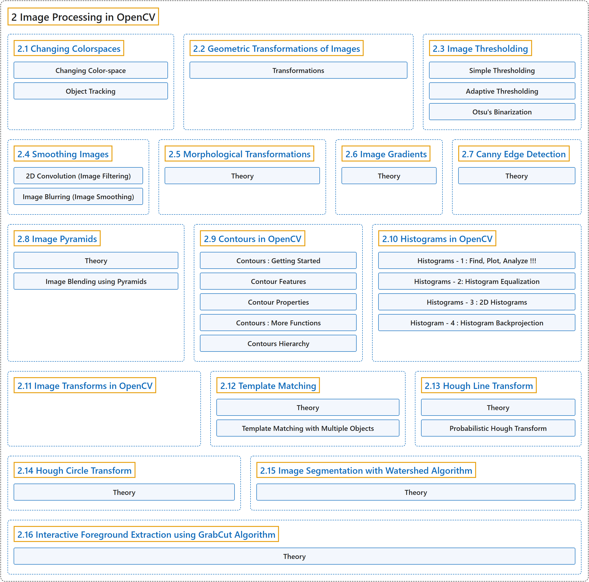

2. Image Processing in OpenCV
Classification

Glossary
| Term | Definition | 中文翻译 | Source |
|---|---|---|---|
| 2 Image Processing in OpenCV OpenCV 中的图像处理 |
"In this section you will learn different image processing functions inside OpenCV." | 在本节中，你将学习 OpenCV 中各种图像处理函数。 | OpenCV team, n.d.-b, "OpenCV-Python Tutorials", item 4 |
| 2.1 Changing Colorspaces 颜色空间转换 |
(context) "Learn to change images between different color spaces." | （语境）学习在不同颜色空间之间转换图像。 | OpenCV team, n.d.-a, "Image Processing in OpenCV", item 1 |
| 2.2 Geometric Transformations of Images 图像的几何变换 |
(context) "Learn to apply different geometric transformations to images like rotation, translation etc." | （语境）学习对图像施加各种几何变换，如旋转、平移等。 | OpenCV team, n.d.-a, "Image Processing in OpenCV", item 2 |
| 2.3 Image Thresholding 图像阈值化 |
(context) "Learn to convert images to binary images using global thresholding, Adaptive thresholding, Otsu's binarization etc" | （语境）学习用全局阈值、自适应阈值、Otsu 二值化等方法把图像转换为二值图像 | OpenCV team, n.d.-a, "Image Processing in OpenCV", item 3 |
| 2.4 Smoothing Images 图像平滑 |
(context) "Learn to blur the images, filter the images with custom kernels etc." | （语境）学习模糊图像、用自定义卷积核过滤图像等。 | OpenCV team, n.d.-a, "Image Processing in OpenCV", item 4 |
| 2.5 Morphological Transformations 形态学变换 |
(context) "Learn about morphological transformations like Erosion, Dilation, Opening, Closing etc" | （语境）学习形态学变换，如腐蚀、膨胀、开运算、闭运算等 | OpenCV team, n.d.-a, "Image Processing in OpenCV", item 5 |
| 2.6 Image Gradients 图像梯度 |
(context) "Learn to find image gradients, edges etc." | （语境）学习求图像梯度、边缘等。 | OpenCV team, n.d.-a, "Image Processing in OpenCV", item 6 |
| 2.7 Canny Edge Detection Canny 边缘检测 |
(context) "Learn to find edges with Canny Edge Detection" | （语境）学习用 Canny 边缘检测寻找边缘 | OpenCV team, n.d.-a, "Image Processing in OpenCV", item 7 |
| 2.8 Image Pyramids 图像金字塔 |
(context) "Learn about image pyramids and how to use them for image blending" | （语境）学习图像金字塔，以及如何用它进行图像融合 | OpenCV team, n.d.-a, "Image Processing in OpenCV", item 8 |
| 2.9 Contours in OpenCV OpenCV 中的轮廓 |
(context) "All about Contours in OpenCV" | （语境）关于 OpenCV 中轮廓的一切 | OpenCV team, n.d.-a, "Image Processing in OpenCV", item 9 |
| 2.10 Histograms in OpenCV OpenCV 中的直方图 |
(context) "All about histograms in OpenCV" | （语境）关于 OpenCV 中直方图的一切 | OpenCV team, n.d.-a, "Image Processing in OpenCV", item 10 |
| 2.11 Image Transforms in OpenCV OpenCV 中的图像变换 |
(context) "Meet different Image Transforms in OpenCV like Fourier Transform, Cosine Transform etc." | （语境）认识 OpenCV 中的各种图像变换，如傅里叶变换、余弦变换等。 | OpenCV team, n.d.-a, "Image Processing in OpenCV", item 11 |
| 2.12 Template Matching 模板匹配 |
(context) "Learn to search for an object in an image using Template Matching" | （语境）学习用模板匹配在图像中搜索物体 | OpenCV team, n.d.-a, "Image Processing in OpenCV", item 12 |
| 2.13 Hough Line Transform 霍夫直线变换 |
(context) "Learn to detect lines in an image" | （语境）学习检测图像中的直线 | OpenCV team, n.d.-a, "Image Processing in OpenCV", item 13 |
| 2.14 Hough Circle Transform 霍夫圆变换 |
(context) "Learn to detect circles in an image" | （语境）学习检测图像中的圆 | OpenCV team, n.d.-a, "Image Processing in OpenCV", item 14 |
| 2.15 Image Segmentation with Watershed Algorithm 用分水岭算法分割图像 |
(context) "Learn to segment images with watershed segmentation" | （语境）学习用分水岭分割法分割图像 | OpenCV team, n.d.-a, "Image Processing in OpenCV", item 15 |
| 2.16 Interactive Foreground Extraction using GrabCut Algorithm 用 GrabCut 算法交互式提取前景 |
(context) "Learn to extract foreground with GrabCut algorithm" | （语境）学习用 GrabCut 算法提取前景 | OpenCV team, n.d.-a, "Image Processing in OpenCV", item 16 |
References
OpenCV team. (n.d.-a). Image Processing in OpenCV. OpenCV-Python Tutorials (Version 4.13.0). Retrieved October 31, 2026, from https://docs.opencv.org/4.x/d2/d96/tutorial_py_table_of_contents_imgproc.html
OpenCV team. (n.d.-b). OpenCV-Python Tutorials. OpenCV-Python Tutorials (Version 4.13.0). Retrieved October 31, 2026, from https://docs.opencv.org/4.x/d6/d00/tutorial_py_root.html